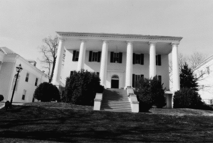

Mary Baldwin College Hilltop Dormitory
Staunton, Virginia

-
Constructed: 1816-1820
-
Original Use: Dormitory
-
Ownership History:
-
Number of Stories: 2
-
Architectural Style: Greek Revival
-
Exterior Features: Brick construction with hip roof. Hexaprostyle Tuscan columns on two-story portico. Elaborate frontispiece entrance with semi-circular fanlight and fluted pilasters.
-
Interior Features: N/A.